搭地鐵大冒險
今日遊記內容過於龐大、照片很多，分成四篇來寫：PART 1
這幾天都是騎小多在市區閒晃，這樣是最輕鬆也最省錢的方式，可是卻沒辦法搭到很有名的莫斯科地鐵，就這麼離開莫斯科會留下遺憾。
還沒搭地鐵的原因有兩個，聽說裡面治安不太好，會有搶劫的事情發生，但這我倒不怎麼擔心。
最令我傷腦筋的是莫斯科的地鐵太複雜了，我連搭台北捷運都可以在地下街迷路三個小時，有如地底迷宮般的莫斯科地鐵，真擔心一進去就沒有再踏出來的一天。
再擔心也是多餘的，今天決定不騎小多，要搭地鐵到處跑透透，迷路有什麼好怕的，大不了變成地底人。
離住的地方最近的是SHABOLOVSKAYA站，走路只要五分鐘的距離，相當的方便。
就以這一站為大冒險的出發點，唯一能依靠的依然是一本中文版莫斯科旅遊指南，裡面有地鐵的線路圖做為指路明燈。
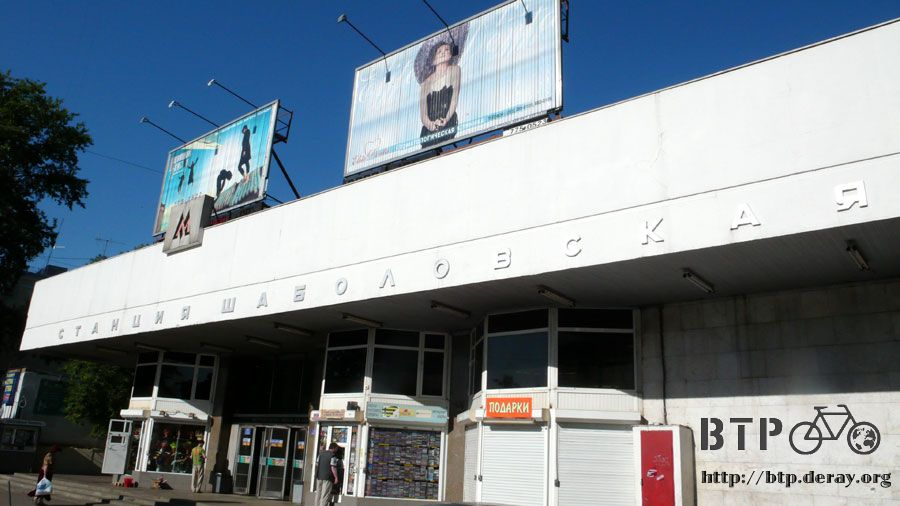
搭地鐵之前要先買票，莫斯科的地鐵還沒開始搭我就很欣賞它。
票價非常的便宜，單次只要十七盧布，而且不論搭多遠、經過多少站、耗去多少時間通通都不要緊，一律就是十七盧布這個價錢。
若買回數票，比如五次、十次、月票，那價錢更加的便宜，折扣一直往下打。
進入車站後找不到自動售票機，買票得去售票櫃台跟真人應對才行，但其實很簡單，只要兩手張開，就可以買到十次搭乘的車票。
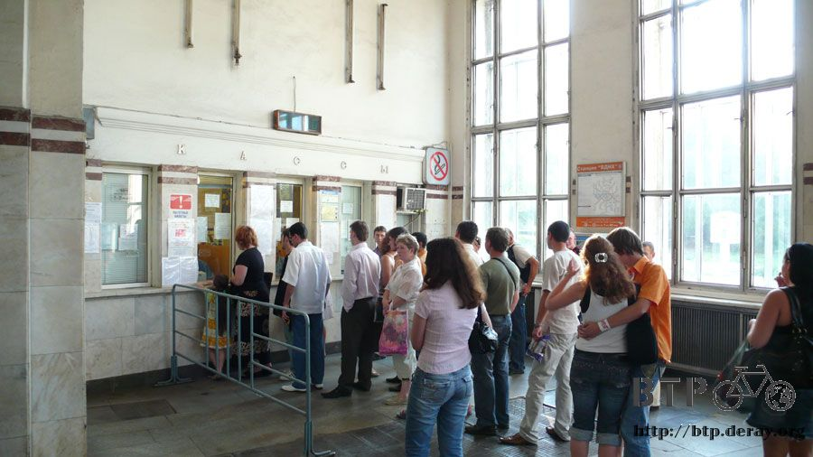
搭一次要十七盧布，買十次的車票平均起來搭一次只需要十四盧布，比台灣最便宜的捷運票價還低廉。
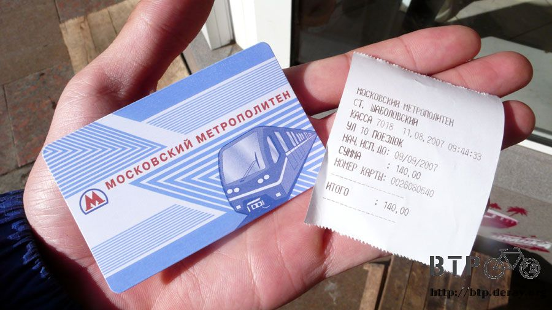
車票是紙做的，不是用塑膠，相當環保，而且背後沒有條碼或是磁條這些東西，怎麼看都是稍厚的紙張而已，但卻是磁感應技術。
進入票口只需要靠近感應處，本來亮紅燈的地方就會變成綠色，並且顯示還能使用的次數，相當的方便而且進步。
進站之後就搭乘手扶梯往地底下深入，莫斯科興建地鐵的時候怕因為戰亂而被破壞，地鐵蓋的超級深，平均都在地下五十～六十公尺處，最深的甚至到一百公尺。
這相當於地下三十層樓的深度，而且還是八十多年前就已經完工，單是這一點就很驚人，搭手扶梯深入地底要搭很久～
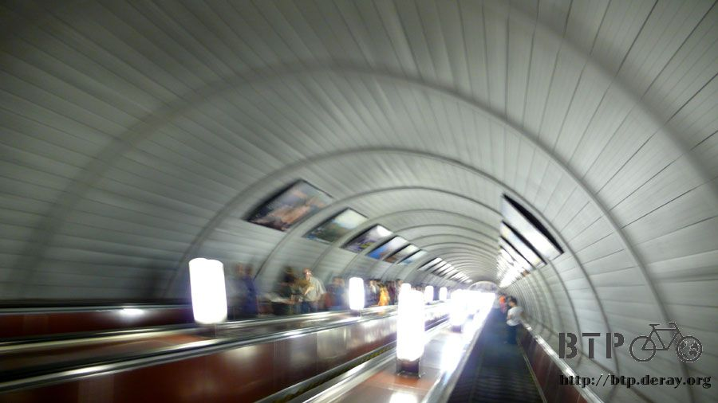
到底之後往上拍一張照片，根本看不到頂端在什麼地方。
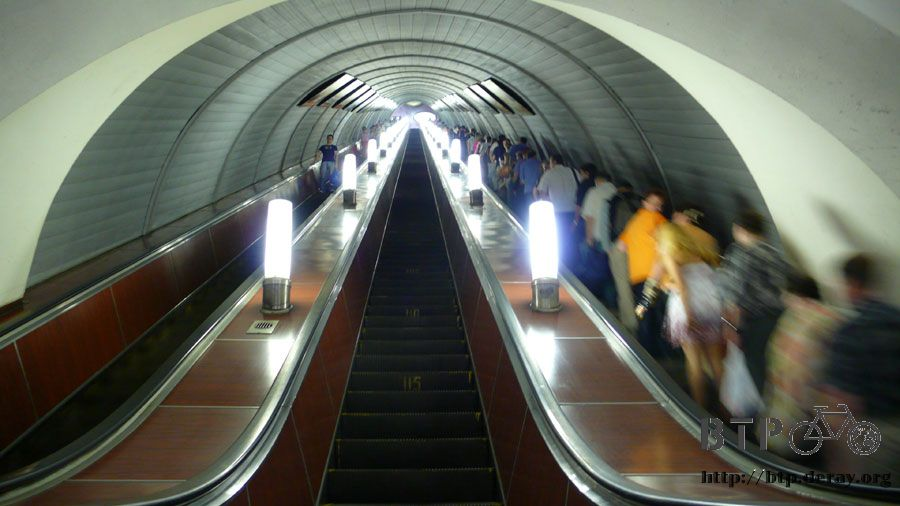
地鐵興建的時候連空調都還沒發明，建築師利用了特殊的設計讓地鐵在夏天的時候能夠將熱氣散出，冬天則能保留暖空氣，相當鬼斧神工。
走出電扶梯之後就是月台了，這一站比較小～沒那麼華麗，盡頭有碎花拼玻璃，先在這一站讓我學習怎麼搭地鐵。
有一根標有紅色和藍色的柱子，這是每一站都會有的東西，表示列車是順行還是逆行，藍色線是由男聲做為廣播，紅色線則是女聲報站名。
所有的廣播、路標、指示牌全部都是俄文，只有那種一大張標示全部地鐵路線的，才會有小小的英文對照站名。
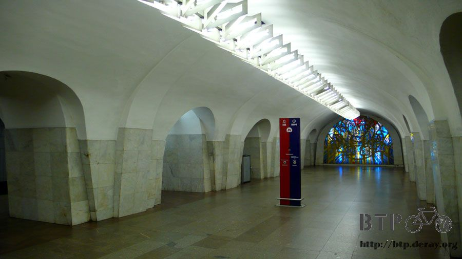
莫斯科地鐵，從1935年第一條地鐵開通營運，至今已有很長一段時間，線路也從一條增加至十一條，並有一百七十一個車站，
地鐵總長度兩百七十七點九公里，從早上五點半營運到半夜一點半，每天運載的乘客數量高達九百萬，是世界排名第二運轉率，僅次於紐約地鐵。
除了這些驚人的數字之外，更令它著名的是地鐵中的華麗建築。
在興建的時候就大量使用馬賽克壁畫、大理石、吊燈等高級材料，簡直是富麗堂皇的地下宮殿。
地鐵班距很短，兩三分鐘就有一班，車次多的驚人～才剛下月台地鐵就來了。
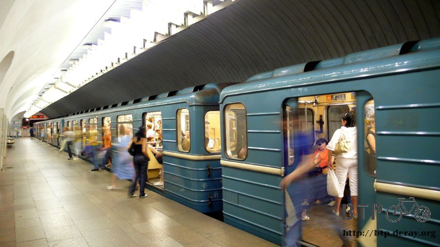
糟糕，要不要上車？連開往哪邊都還搞不清楚，先別貿然行事。
抬頭就會看到月台的指示牌。除了依照紅藍色區分之外，所有的地鐵站都有一號跟二號月台，指示牌會標示出從這一站往下走的所有站名。
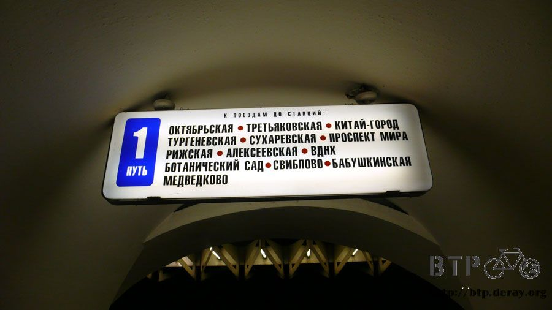
目前要些往北搭一站，接上環狀線，所以在第一月台等車就對了，搞清楚方向之後很快的又來了一班車。
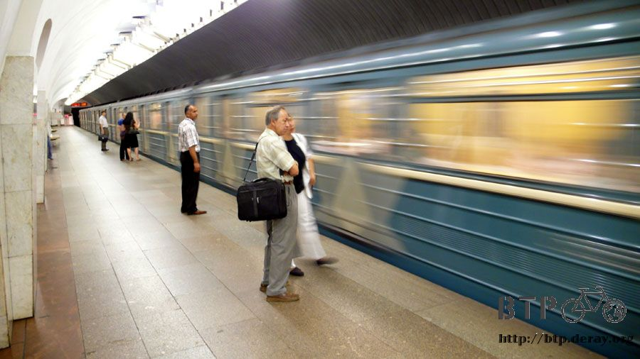
上車只搭一站就要轉車，地鐵雖然錯綜複雜，全是俄文標示，但是有兩種東西是不會有語言隔閡的。
一個是顏色，另一個是阿拉伯數字，所有的地鐵都有自己的顏色標記和代號，這樣就不容易迷路了。
看到這一張地鐵圖有沒有很惶恐，真是複雜的嚇死人，不怕～對自己要有信心，現在要從橘色線往北搭到環狀的咖啡色線。
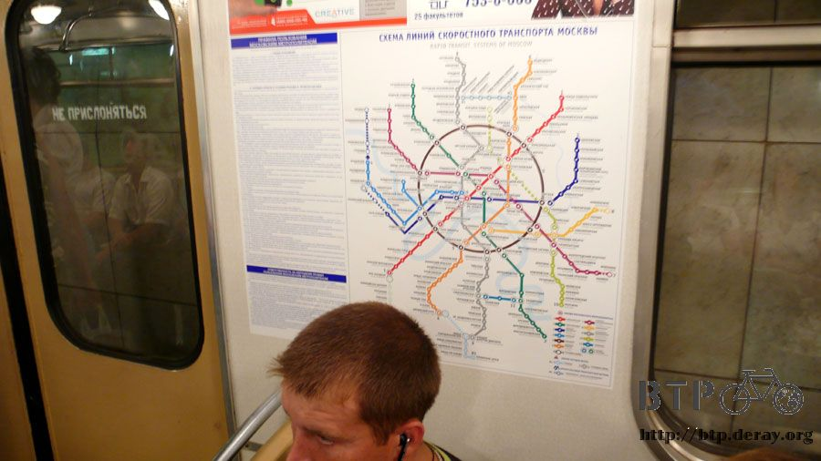
下車之後走天橋離開這邊，到咖啡色環狀線月台的這段路中間是不需要出站的，橋下就是鐵軌，很立體化的建築概念。
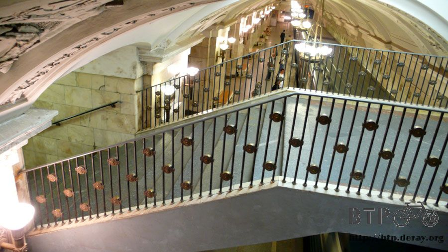
猜猜看這是什麼東西？
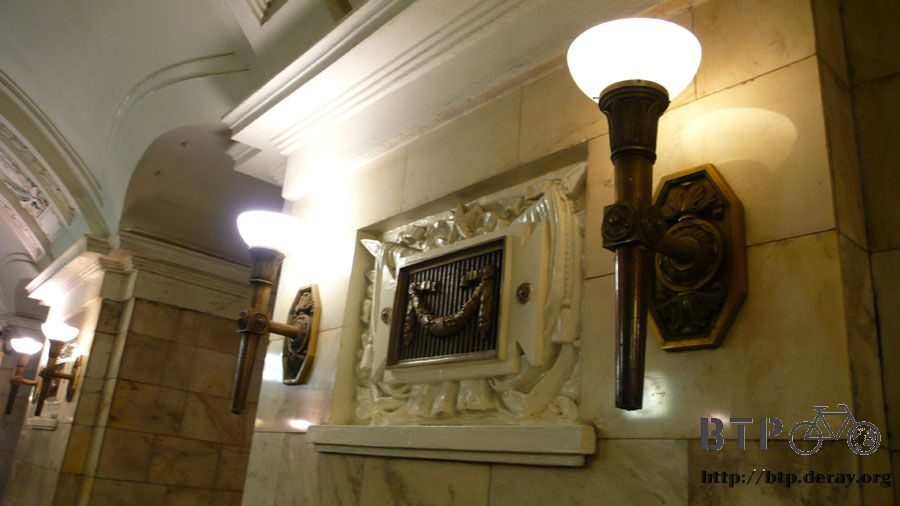
有一些長得跟這個很像的，是廣播用的喇叭，而這個則是空調的出風口，真感謝冷氣已經被發明，地鐵中很涼爽舒適。
這一站就是環狀線的OKTYABRSKAYA站，開始有一點華麗的感覺了，天花板和壁面都有浮雕，燈飾也很美觀。

搭上環狀線順時鐘移動，昨天騎小多在路面跑，今天轉戰到地底下，不論地上或地下都是靠一個圓環來連接市區的主要交通。
照片中都是頭頂，這就是身高一百八十幾的人看出去的視野～
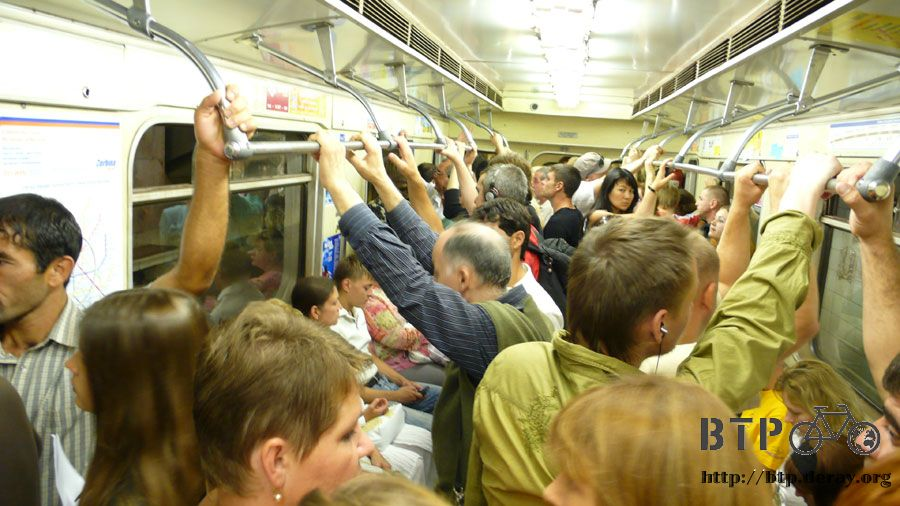
車廂內的廣告不多，車子有點舊可是很乾淨，沒什麼髒污。
這一班車有點擠，只搭了一站就下車，然後在同樣的月台等下一班車。
月台沒有畫排隊的等候線，可能算不準地鐵會停在什麼地方吧，但是所有人都會禮讓下車的乘客優先，然後才依序上車。
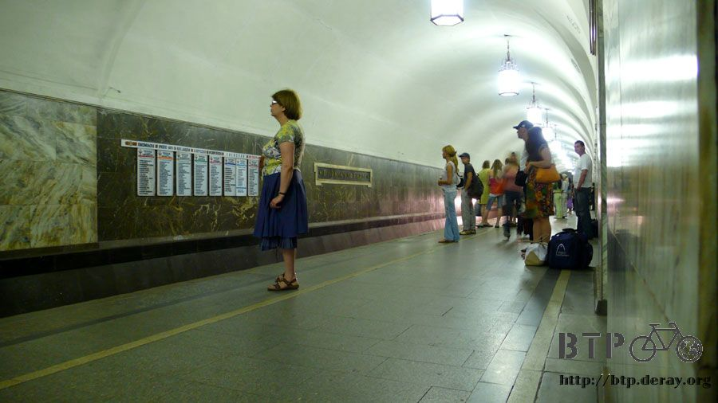
非常乾淨的月台。值得一提的是，莫斯科的地鐵不禁止飲食，當然也可以嚼口香糖，站內幾乎沒有垃圾桶，也沒看到清掃的人員，可是就是能保持得這麼乾淨。
人心的自發性的愛護比起一堆罰則要來得令人敬佩，相較台灣一大堆規定，連學生不讓座都要校方記過處分，實在是令人貽笑大方。
同樣的路線，剛才滿滿都是人，換搭下一班而已，就變成空蕩蕩的，還能有位置可以坐，地鐵班次實在太多，儘管每日承載量高達九百萬人次，依然不覺得擁擠。
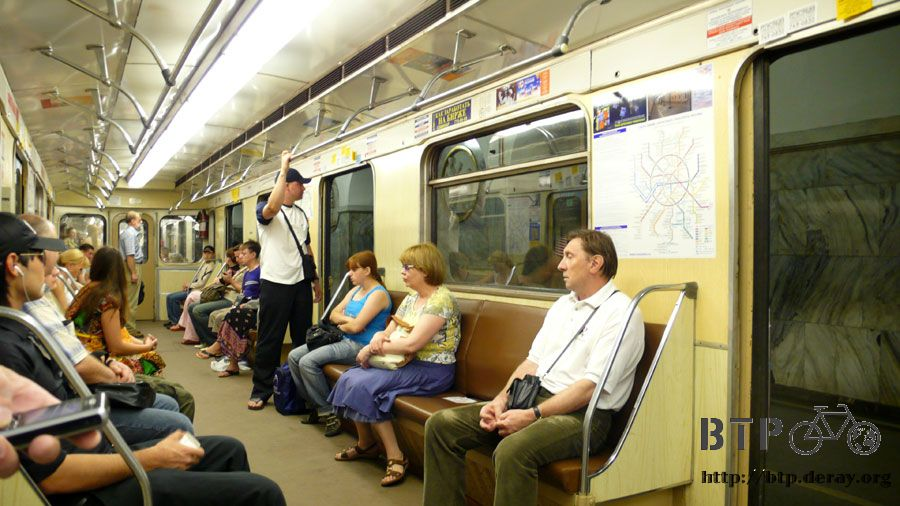
車廂中張貼有該條路線的說明，每一條路線大都是十五個站左右，用一條直線表示，寫上站名，並標記在哪幾個站會和其他顏色的線路交會，一看就能明白。
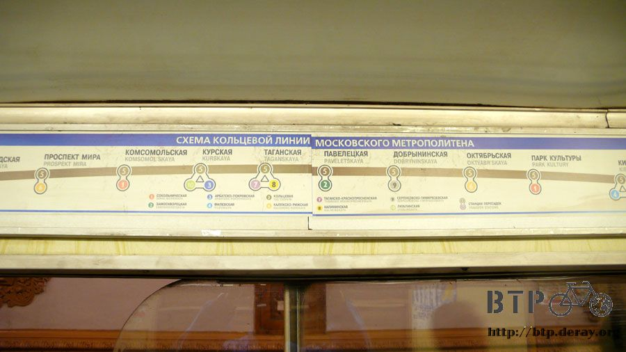
這次搭了兩站才下車，這一站就熱鬧很多，一下車就看到各種名人的介紹，照片的部分是用馬賽克拼貼而成。
像這樣的藝術品有十幾個，全部都不重複，可惜這些人我都不認識，俄文的說明也看不懂。
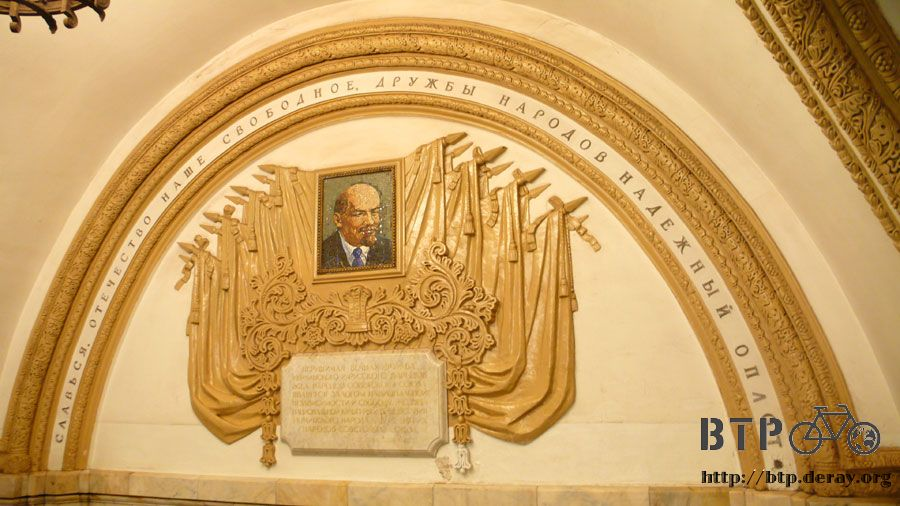
欣賞這些漂亮的藝術品是不需要出站的，如此華麗的馬賽克壁畫、燈飾、拱門就在等車的月台邊而已。
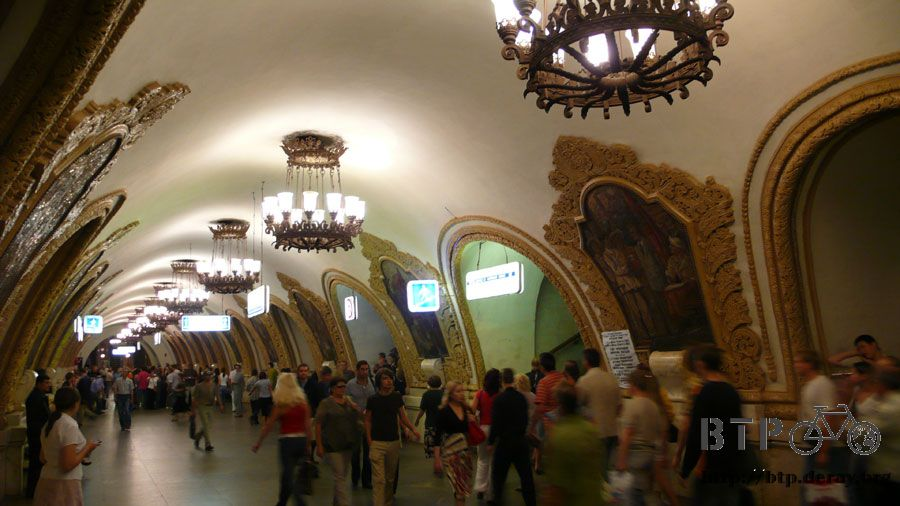
很有時間的人可以買一張十七盧布的車票，然後花一整天的時間逛遍一百七十一個車站，這肯定是很值得驕傲的事蹟。
美麗的馬賽克壁畫讓月台像美術館一樣，真的有團體進來參觀這些作品，還有說明人員講解，鎂光燈閃個不停。
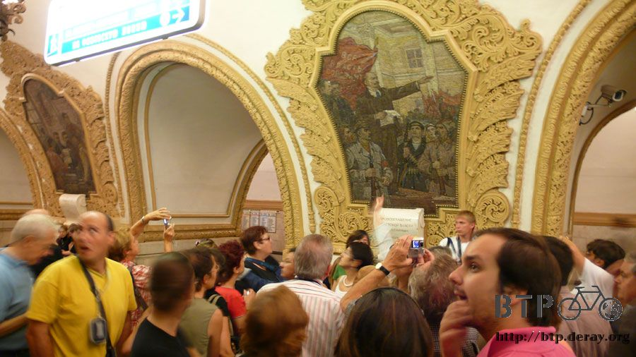
這些都是很有紀念價值的藝術品，卻沒有任何的保護措施，任何人手一伸就可以觸碰到，可是一點也沒有被破壞的痕跡，真叫人對莫斯科人的公德心感到尊敬。
不需要一個要價好幾萬的垃圾桶，這裡的地面上看不到一張紙屑。
不需要規定一堆有的沒的，飲食自由、寵物和自行車都能隨意攜帶上車，卻不會造成其他人的困擾。
最龍蛇混處的地鐵站都能將藝術品保存得如此完好，沒有人會在牆壁上簽名塗鴉。
月台不需要畫排隊線，因為沒有爭先恐後搶著上車的乘客；不需要規劃博愛座，敬老是基本的禮儀。
台灣有很多值得學習的地方，不知道在貴什麼的票價、冷冰冰的車站規劃、刺耳的發車音效、看看莫斯科的地鐵在八十年前就做到什麼地步？
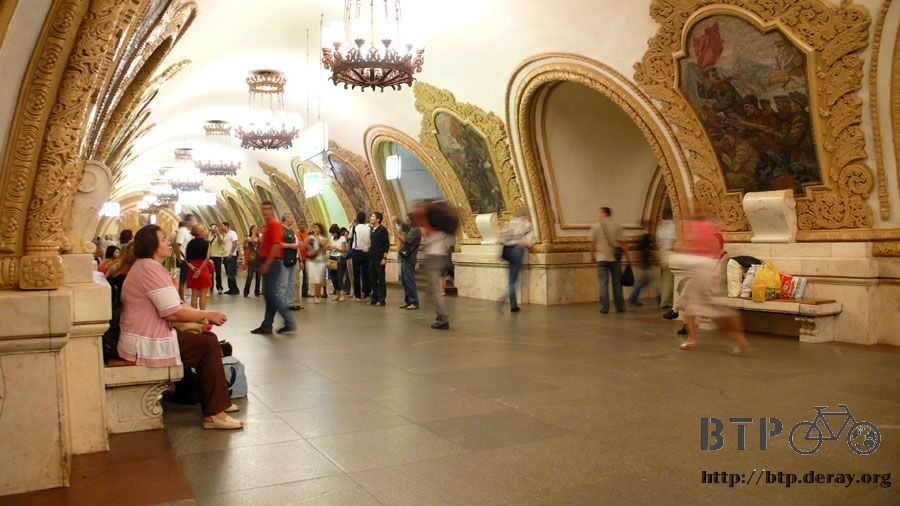
繼續搭車移動，要從咖啡色環狀線轉到天藍色的四號線。
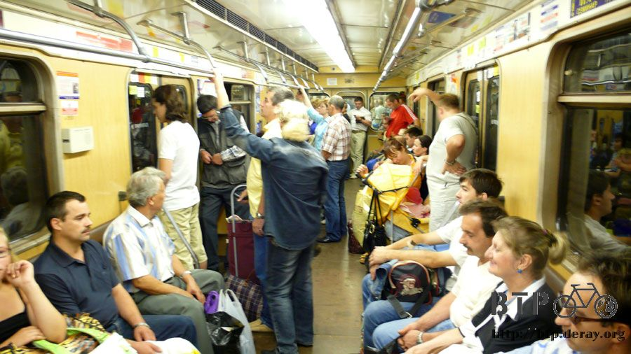
下車之後像無頭蒼蠅，沒關係，只要跟著人群走就可以了，這一站也是很漂亮～要是能逛完所有的車站該有多好。
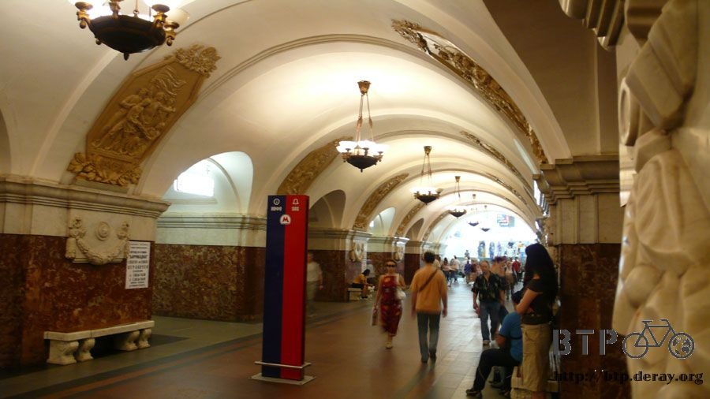
路標的指示非常清楚，甚至簡單的有點好笑，順著藍色的箭頭走就對了，這樣就不會走錯路，順利被引導至正確的地方。
這一紅一藍的標誌，之後我發現它有更神奇的地方，稍後再繼續介紹。
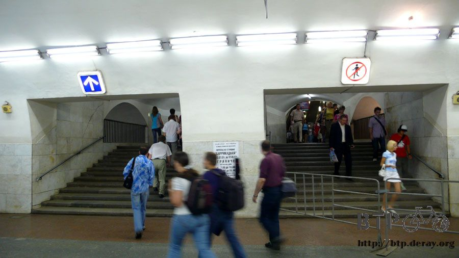
報紙販賣機，在莫斯科都看不到自動販賣機，之前去過一趟日本，所有的大街小巷全部擺滿販賣機，真是兩種完全不同的生活型態。
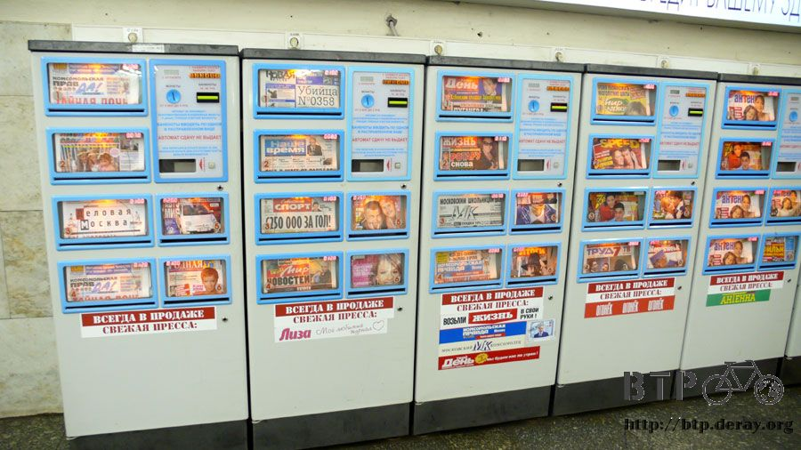
不同線路之間的連接走道設計的都很漂亮，進入刷票的地方之後就不會有商店，也看不到地下商場沿路賣東西，完全是單純的地鐵站。
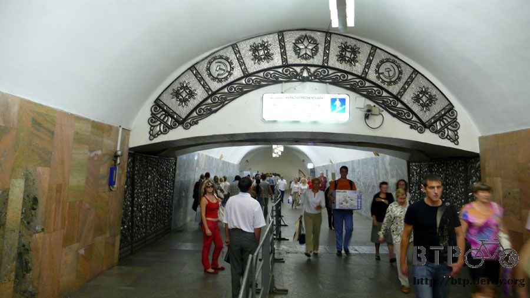
走著走著就到了月台，從頭上的燈光到壁面的大理石花紋，整體的設計感非常出色，一路上都驚喜連連。
想不到搭地鐵也能這麼開心，早上那些顧慮，搶劫啦～迷路啦～通通都拋到腦後去了。
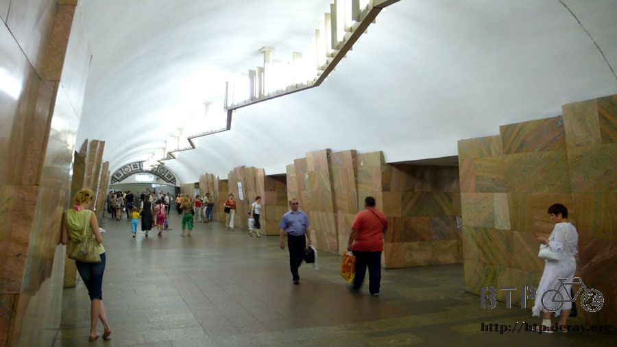
這是走道上的照明燈飾，感覺上就是六十幾年前的照明設配，實在是太有味道了，很像戰爭片中碉堡裡才會有的東西。
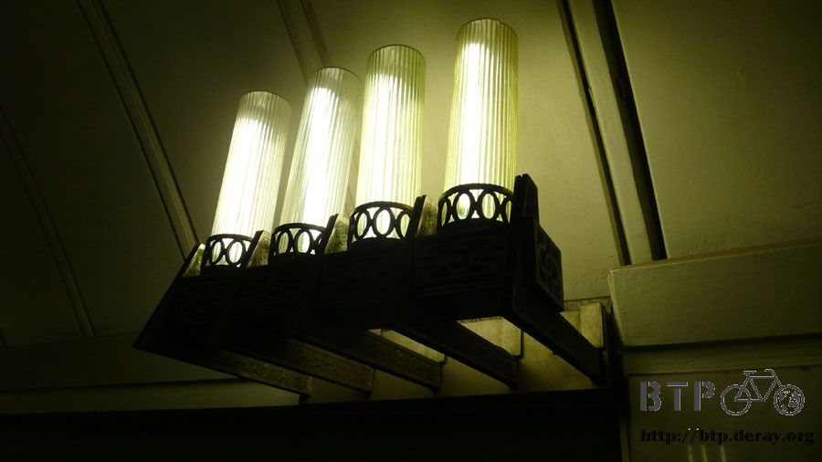
高低落差的部分都是用超長的手扶梯運送乘客，大多都是四座手扶梯，可是只開放其中的兩座，比較繁忙的車站才會四座都開。
不會動的手扶梯就是樓梯啦，不想排隊或是想健康一點的人就可以爬樓梯。
手扶梯沿路都有放照明設備，燈泡的前面有長方形的凹槽，那個是廣播使用的喇叭，站內廣播聲音輕輕柔柔的很好聽～
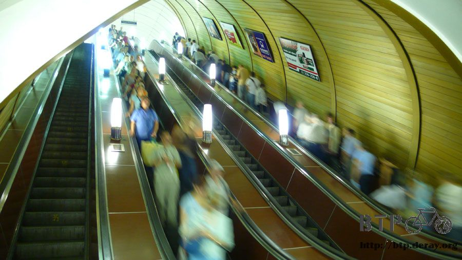
走路混合搭手扶梯，一點也不會迷路，很順利的就接上四號天藍色線，走天橋下月台，從上面往下看一整排都是漂亮的燈飾。
雖然在很深的地底下，但是車站裡面非常的明亮，沒有陰暗的角落，到處都有保全的攝影機，由保安媽媽們在監看。
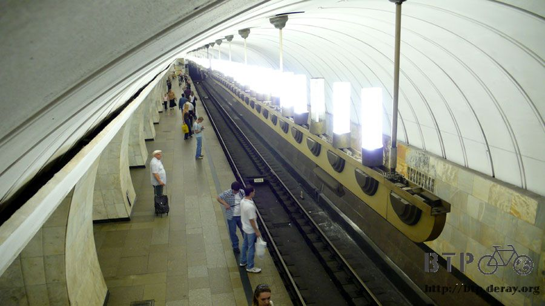
地鐵內警察蠻多的，三三兩兩不停巡邏，也會搭上地鐵換站繼續巡邏，如果不要遇到壞警察，那麼地鐵內的治安可以讓人放心。
路上看到的浮雕藝術品，背後那些根本就是金磚呀！
人心自私的國家就會覺得公眾的東西有什麼好愛惜的，那又不是我的，弄壞就算了。
聽說社會主義的國家，治理得好能做到路不拾遺、夜不閉戶，也許莫斯科地鐵能夠維持得這麼良好，跟長久以來養成的民族性有很大的關係吧。

又搭上手扶梯了，這次是直直的向上攀升，要離開地底重返陽光之下，經過那麼多站，轉了三條顏色鐵道，搭地鐵比我想像的還容易太多太多。
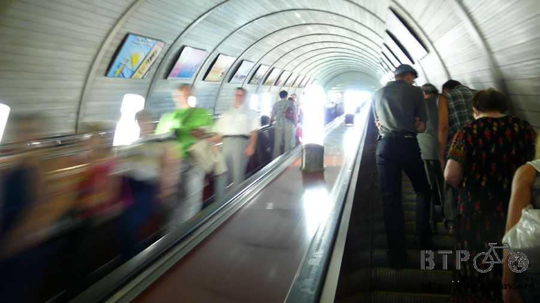
在出站之前就看到速食餐廳，很多人都在這裡吃點東西，今天要走很多地方觀光，趁現在餵飽肚子，等一下才不會餓到沒力。
這種站著吃的桌子很常看到，一般都是細細的桌腳，這個桌腳超級粗，因為中間就是垃圾桶，吃完的垃圾直接丟進去就搞定。
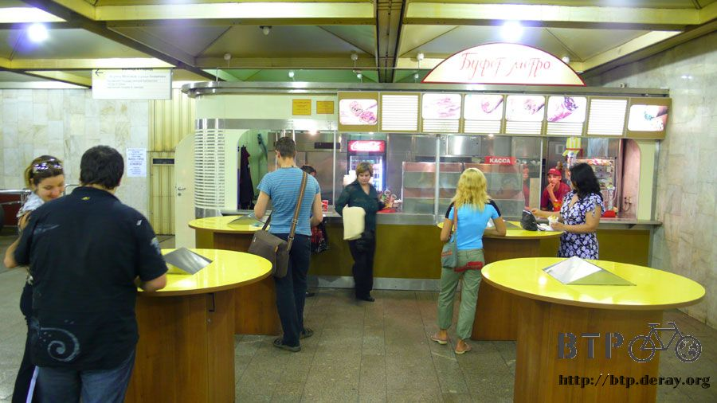
跟大家一樣點了熱狗和可樂，昨天吃到超美味的熱狗很開心，今天看到這一份....
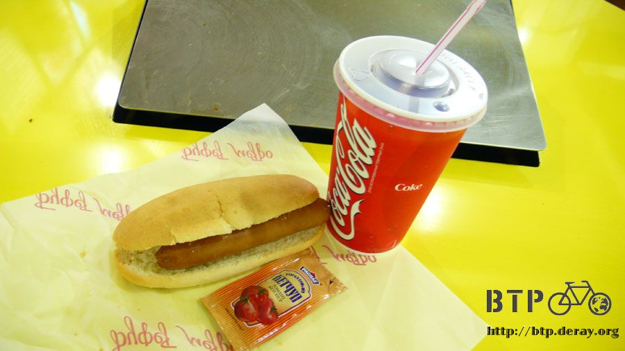
整個未免也太陽春了吧？
熱狗那麼小一條，看起來也不好吃 ，起碼得泛著油光表示自己很可口吧。
麵包也是乾乾的，上面也沒有芝麻，調味料只有一包番茄醬，還得自己加，也沒有酸黃瓜和美乃滋，整個差太多了吧。>"<
但是價錢比較便宜，一分錢一分貨，能填飽肚子就是好食物，三口就吃下肚，可樂帶著慢慢喝。
走出這邊就代表出站了，這樣就完成了一次的搭乘。
只有進站的時候需要刷票，出站是不需要任何動作，直接走出去就可以，所以就算票弄丟了也沒關係，也沒有查票員的存在。
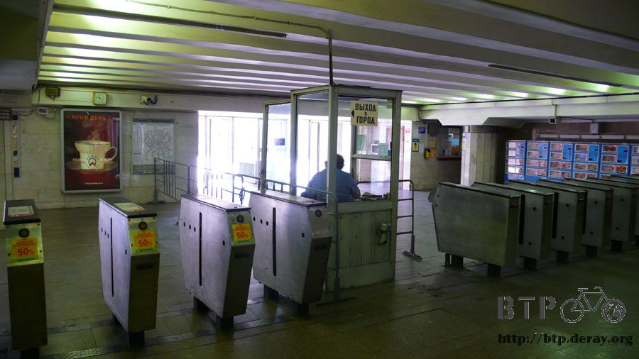
車站內的地圖告示牌，說明周邊的地理環境，目前所在的這一站是BOROVITSKAYA站。
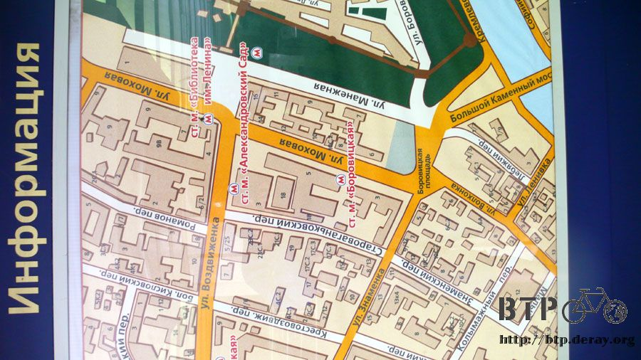
出站了～重新回到大太陽底下，連續好幾天都是這樣萬里無雲的大好天氣，莫斯科正午的氣溫大概是二十八度，很舒適的天氣。
外觀看起來這麼不起眼的一個小車站，裡面真是別有洞天，莫斯科的地鐵實在太值得搭乘了，不僅僅是方便的交通工具，也是超棒的觀光處。
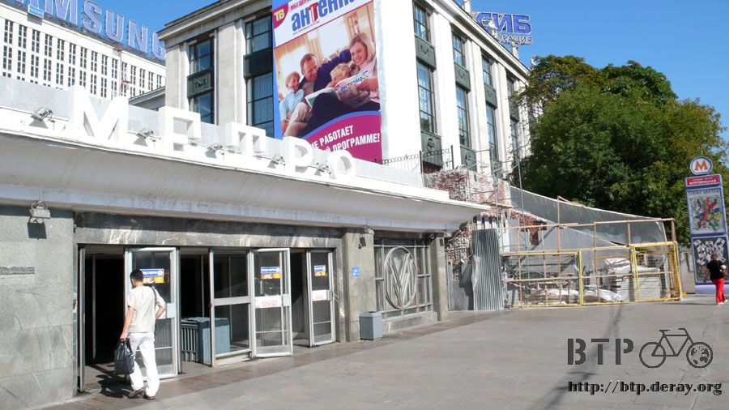
搭了這麼多車好不容易才到這邊，此行目的地究竟是哪呢？請接著看第二篇的遊記。
有人問遊記幹嘛分四篇寫，關於這個問題，之前的遊記照片數量大約在三十張左右，少一點的不到二十張，甚至連十張都不到。
今天遊記使用的照片高達兩百二十五張，耶～你沒看錯，就是這個數字，那麼就接著往下看吧～
繼續閱讀：8.11 紅場～美麗與魔幻